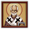

基督教宗教組是遊戲中最大的宗教組之一。它總共有7種教派： 天主教、
天主教、 新教、
新教、 改革宗、
改革宗、 東正教、
東正教、 科普特正教、
科普特正教、  聖公宗和
聖公宗和  胡斯派。
胡斯派。
在1444年默認開局中，存在着  天主教、
天主教、 東正教、
東正教、 科普特正教和
科普特正教和  胡斯派四種教派，它們佔據了近東、東非的部分區域以及幾乎整個歐洲。在宗教改革事件之後，
胡斯派四種教派，它們佔據了近東、東非的部分區域以及幾乎整個歐洲。在宗教改革事件之後， 新教和
新教和  改革宗信仰將先後開始在歐洲傳播；同樣在這一時期，不列顛島上的國家則可能通過事件轉為
改革宗信仰將先後開始在歐洲傳播；同樣在這一時期，不列顛島上的國家則可能通過事件轉為  聖公宗。
聖公宗。
七大教派互相視作異端，而非異教；東正教和科普特正教國家額外享受「可容忍的異端」使他們和其它基督教國家間的關係懲罰更小。在新教和改革宗可用後， 天主教、
天主教、 新教、
新教、 改革宗國家可以在宗教介面內彼此轉換宗教，轉換教派消耗 −100
改革宗國家可以在宗教介面內彼此轉換宗教，轉換教派消耗 −100  威望，但同時會得到10年的 +10%
威望，但同時會得到10年的 +10%  傳教力量修正和 -33%
傳教力量修正和 -33%  本地傳教維護費。東正教和科普特正教沒有轉為新教、聖公宗、改革宗和胡斯派的選項，但它們分別都有自己的特殊宗教機制。
本地傳教維護費。東正教和科普特正教沒有轉為新教、聖公宗、改革宗和胡斯派的選項，但它們分別都有自己的特殊宗教機制。
只有基督教宗教組國家間可以形成  聯合統治。
聯合統治。
天主教
1444年，天主教是歐洲西部及北部佔主導地位的基督教教派，但在宗教改革期間它的統治地位將很可能會被新教和改革宗粉碎。
- 參見：天主教事件
天主教國家需關注繁複的教廷體制，其以——教宗為最高首腦，其下有着樞機和主教等數不勝數的各階教士。在歐陸風雲4中，這一制度表現為教廷系統，該系統內不僅有構築了羅馬公教行政體系的數十個樞機主教席位，還包含最重要的教宗聖座。
天主教所帶來的修正：[1]
 +1 正統信仰容忍
+1 正統信仰容忍 +1% 對異教傳教力量
+1% 對異教傳教力量- +5%(在基礎的10%之上)由
 教士階層的發展度控制需求(僅在含
教士階層的發展度控制需求(僅在含 哥薩克 DLC時)
哥薩克 DLC時)
首都在歐洲的天主教國家可通過教廷系統與教宗進行互動。殖民時會受到托爾德西里亞斯條約的影響，獲得增益或懲罰（僅在含 黃金國 DLC時）。
黃金國 DLC時）。
 可能的異端：波格米勒派、瓦勒度派、小兄弟會、胡斯派、羅拉德派、蘇西尼派。
可能的異端：波格米勒派、瓦勒度派、小兄弟會、胡斯派、羅拉德派、蘇西尼派。
天主教廷
- 主條目：教廷
天主教廷有49個 樞機席位，每年的第一天會制定一個新的席位。這些席位會半隨機地產生在天主教國家的天主教省份中。省份發展度越高，國家總發展度越高，越容易獲得新的樞機席位。
樞機席位，每年的第一天會制定一個新的席位。這些席位會半隨機地產生在天主教國家的天主教省份中。省份發展度越高，國家總發展度越高，越容易獲得新的樞機席位。
天主教國家可獲得  教廷影響力，可用於投資提高教廷監護的獲選概率，或換取一些增益。在教宗的統治下，（
教廷影響力，可用於投資提高教廷監護的獲選概率，或換取一些增益。在教宗的統治下，（ 教宗國以外的）天主教國家可將他們儲存的教廷影響轉化為10點影響力投資，隨着投資次數增加，轉換比例逐漸降低：首個10點的影響力投資花費5點
教宗國以外的）天主教國家可將他們儲存的教廷影響轉化為10點影響力投資，隨着投資次數增加，轉換比例逐漸降低：首個10點的影響力投資花費5點 教廷影響，第二個10點投資花費10點
教廷影響，第二個10點投資花費10點 教廷影響，第三次則花費15點
教廷影響，第三次則花費15點 教廷影響，以此類推。教宗國不會獲得教廷影響；但會基於現存的紅衣主教數量自動獲得影響力投資。當前的教宗去世時，所有天主教國家均有機會成為下一任教廷監護，其概率等於本國的影響力投資佔所有天主教國家影響力投資之和（包含教宗國所佔的「無中生有」的影響力投資）的比例。
教廷影響，以此類推。教宗國不會獲得教廷影響；但會基於現存的紅衣主教數量自動獲得影響力投資。當前的教宗去世時，所有天主教國家均有機會成為下一任教廷監護，其概率等於本國的影響力投資佔所有天主教國家影響力投資之和（包含教宗國所佔的「無中生有」的影響力投資）的比例。
有一些國家可以通過國家理念獲得更多的教廷影響力：
| 傳統 | 理念 | 獎勵/野心 | 政策 | |
|---|---|---|---|---|
| +2.0 年度 |
|
|
|
— |
| +1.0 年度 |
|
|
— | — |
| +0.5 年度 | — |
|
— | — |
教廷監護
教廷監護可獲得以下增益：
| +1 | 外交官 | |
| +1 | 年度威望 | |
| −10% | 穩定花費修正 | |
| +2 | 可用顧問 | |
| −20% | 顧問花費 | |
| +1 | 無維護將領 | |
| −20% | 侵略性擴張 | |
| −5% | 科技花費 | |
| 10% | 教士忠誠度平衡 |
- 可對天主教國家絕罰（於專制主義時代之前）
- 可對非基督教國家發動十字軍（於專制主義時代之前）
- 破除王室聯姻時免除 −1
 穩定懲罰。
穩定懲罰。 - 自動獲得「派遣教廷使節」的獎勵。
若教宗國消失，監護將會消除；若教宗國改變宗教，則監護將會被一直壟斷直到教宗國再一次改變回天主教。
絕罰
教廷監護可對任何與教宗國關係為負的天主教國家施行 「絕罰」 （英文：「Excommunication」），若教宗國不存在，此項限制也隨之消失。教廷監護一次只能絕罰一位滿足條件的天主教統治者，要施行下一次絕罰需要等待數年的時間。值得注意的是，絕罰是綁定統治者而並非綁定國家，被絕罰的統治者在外交介面中姓名將會被顯示為紅色，在新任統治者上台后姓名將會恢復為平常的白色，除非再次遭到絕罰。絕罰將使所有相鄰天主教國家獲得對其的「絕罰」宣戰理由，擁有下列效果：
- 50% 侵略擴張修正
- 125% 威望修正
- 100% 戰爭分數花費
下列天主教國家無法被絕罰：
- 天主教的
 信仰守護者
信仰守護者 - 當前由攝政議會統治的國家
被絕罰的國家
被絕罰的國家會受到以下懲罰：
 −2 年度威望
−2 年度威望- −3 正統信仰容忍
 −5 年度奉獻度
−5 年度奉獻度 −10 年度教廷影響
−10 年度教廷影響
 −50 與天主教國家關係
−50 與天主教國家關係- −200 與天主教神權國關係
解除絕罰
- 教廷監護可通過外交行動「解除絕罰」來消除一個國家的絕罰懲罰。
- 統治者更換（被絕罰統治者去世或舉行換屆選舉）
- 被絕罰國家改變宗教會自動移除絕罰效果
- 購買贖罪券（花費為平常的 200%）
教廷金庫
|
|
只適用於DLC皇帝激活時。 |
- 主條目：教廷金庫
教廷金庫是一個只屬於天主教會的金庫，它不屬於任何一個國家，但教廷監護可以動用其中的財產來進行一些特殊的活動。教廷金庫中財產最主要的來源是各個天主教國家繳納的什一稅。一個國家的發展度越高，或者該國 教士階層控制的土地越多，其繳納的什一稅金額也就越高。
教士階層控制的土地越多，其繳納的什一稅金額也就越高。
教廷金庫中的  金錢可以用於以下用途：
金錢可以用於以下用途：
改革呼聲
改革呼聲是天主教世界共有的一個數值，體現了人民對天主教會內的亂象以及天主教君主宗教暴行的不滿。改革呼聲會隨着天主教君主在天主教事件中的選擇上升或下降。當改革呼聲達到某個閾值（100%），宗教改革就有幾率發生，並催生新教派新教（以及之後的改革宗）的誕生。
此外，當 改革中心在轉化其他宗教省份時，其速率會獲得一個數值等同於改革呼聲的加成，如當前改革呼聲為150%，省份轉化速度也會獲得150%的加成。
不論玩家如何行動，改革呼聲一般都會隨着AI國家的選擇而增加，並且每年會自動增長0.5%。
新教
在遊戲中新教主要覆蓋於那些受到路德教義啟發並建立了國家教會的國家。
- 參見：新教事件
所有新教國家將獲得修正：[1]
 +10% 全國稅收修正
+10% 全國稅收修正 +15% 改善關係
+15% 改善關係 +10% 教士階層忠誠度
+10% 教士階層忠誠度- 無與教宗互動。
 可能的異端：五旬節派、清教徒、公理會。
可能的異端：五旬節派、清教徒、公理會。
歷史上，當馬丁·路德在1517年10月31日在維滕堡的城堡教堂張貼出《九十五條論綱》時，宗教改革揭開了序幕。在遊戲中，當天主教的  改革呼聲達到100%以上時，事件「新教改革」就可能發生在天主教國家中，觸發事件的國家的一個省份將成為一個
改革呼聲達到100%以上時，事件「新教改革」就可能發生在天主教國家中，觸發事件的國家的一個省份將成為一個  新教的 改革中心，宗教變為新教，在正常遊戲中通常在 1500 年前後出現；之後兩個最先轉為新教的國家也會獲得改革中心。
新教的 改革中心，宗教變為新教，在正常遊戲中通常在 1500 年前後出現；之後兩個最先轉為新教的國家也會獲得改革中心。 地理大發現時代將在新教出現10年後結束，
地理大發現時代將在新教出現10年後結束， 宗教改革時代隨即開始。
宗教改革時代隨即開始。
 新教改革
新教改革
|
|
這條信息可能已不適合當前版本，最後更新於1.33。 |
反對羅馬天主教會的思潮在整個歐洲蔓延，這是僧侶和神職人員越來越腐敗的結果。人們對教會現行教義和貪婪提出質疑。在$CAPITAL$的一位僧侶很長時間以來對此深切關注，現在公開表達了他對教會的不滿，為宗教改革鋪平了道路。
觸發條件
|
平均發生時間
4000 月
|
讓我們拭目以待
| |
- 主條目：改革中心
改革中心可以自動傳播其對應的宗教，與傳教士類似，但其擁有額外傳教力量。任何時候世界上最多只能存在三個新教改革中心。
改革中心只能通過將其省份轉化為非新教來消除，並且所有改革中心省份都擁有「宗教中心」修正，提供  -5% 本地傳教力量。
-5% 本地傳教力量。
 教會力量
教會力量
|
|
只適用於DLC常識激活時。 |
在DLC常識中， 新教添加了教會力量系統；相同的機制也用於
新教添加了教會力量系統；相同的機制也用於  猶太教（稱「信仰力量」）、
猶太教（稱「信仰力量」）、 聖公宗和
聖公宗和  胡斯派。教會力量隨着時間累積，可用於兌換某些信條，帶來常駐的國家修正。
胡斯派。教會力量隨着時間累積，可用於兌換某些信條，帶來常駐的國家修正。
教會力量公式：
[math]\displaystyle{ \text{月度教会力量获得} = \text{基础君主点数} \cdot 0.10 \cdot \left(\text{宗教团结} + \text{其他修正}\right) }[/math]
- 「基礎君主點數」為國家每月獲得的君主點數，包含所有加成（包括統治者能力、顧問、力量投射等）。
- 「其他修正」為所有影響教會力量增長的修正相加的和：
| 條件 | |
|---|---|
| 25% | 是幸運國家（僅AI） |
| 10% | |
| 偉大工程科隆大教堂 偉大工程米蘭主教座堂 偉大工程巴黎聖母院 | |
| 10%/5% | |
| 不定 | |
| 不定 |
| 傳統 | 理念 | 獎勵/野心 | 政策 | |
|---|---|---|---|---|
| +10% | — |
|
— | — |
| +5% |
|
|
— | — |
備註：遊戲中有些修正以百分數形式出現，如宗教統一等。代入公式時請注意不要忘記百分號（如10%應代入0.1，而非10）。
宗教信條
新教的教會力量可以用來開啟信條。每個信條都可以給予國家一個常駐修正，還會在新信條開啟的 10 年內給予一個額外獎勵。一個國家僅能擁有三個信條，之後可消耗教會力量來替換某個現有信條為一個新的信條。獲得一個新的信條或替換一個原有信條均消耗100點教會力量。與理念組事件類似，每個信條激活時都會開啟一兩個對應的事件。
| 信條 | 常駐效果 | 臨時額外獎勵 |
|---|---|---|
| 主教管轄制 | ||
| 教牧人員允許結婚 | ||
| 成人洗禮 | ||
| 聖禮 | ||
| 聖徒寬恕祈禱者 |
|
|
| 允許聖像崇拜 | ||
| 合法的離婚 |
|
|
| 流放異端 | ||
| 教區登記冊 | ||
| 個人信條 | ||
| 允許高利貸 | ||
| 翻譯聖經 | ||
| 正當化衝突 | ||
| 戰時佈道 | ||
| 信仰領袖 | ||
| 聖公宗信條 |
改革宗
- 參見：改革宗事件
 改革宗是宗教改革時期出現的主要宗派之一，它以加爾文等人為代表，其宗教思想與
改革宗是宗教改革時期出現的主要宗派之一，它以加爾文等人為代表，其宗教思想與  新教有相當的差異。改革宗會在新教出現、宗教改革開始的十餘年後通過事件「改革宗派傳播」出現；它有着與新教相同的 改革中心機制，這些改革中心會以相同的機制傳播改革宗信仰；其改革中心的上限也是三個。
新教有相當的差異。改革宗會在新教出現、宗教改革開始的十餘年後通過事件「改革宗派傳播」出現；它有着與新教相同的 改革中心機制，這些改革中心會以相同的機制傳播改革宗信仰；其改革中心的上限也是三個。
與新教改革中心相同，改革宗的改革中心也只能通過將其省份轉化為非改革宗來消除，並且所有改革中心省份都擁有「宗教中心」修正，提供  -5% 本地傳教力量。
-5% 本地傳教力量。
改革宗派傳播
|
|
這條信息可能已不適合當前版本，最後更新於1.33。 |
新教改革如野火燎原般傳遍歐洲。幾種不同的改革運動已經形成，並提出了各自改良基督教信仰的方式。$CAPITAL$一個虔誠的佈道士成為了所謂歸正神學學派的首要人物，強調人類倫理本性是全然敗壞的。只有上帝的干預才能使人類得到救贖，從離經叛道變為自願順從。
觸發條件
|
平均發生時間
80 月
|
讓我們拭目以待
| |
所有改革宗國家將會獲得修正：[1]
 +2 異端容忍
+2 異端容忍 +1 可用顧問
+1 可用顧問- 無與教宗互動
 可能的異端：衛理宗、浸禮宗、貴格會。
可能的異端：衛理宗、浸禮宗、貴格會。
 熱情
熱情
|
|
只適用於DLC國富論激活時。 |
改革宗有着獨特的熱情系統。每個改革宗國家每月會獲得熱情點，其數值依賴於：
| 狀態 | |
|---|---|
| +1 | 基礎被動增長 |
| +1 | 處於和平 |
| +1 | 每一級正 |
| +1 | 是信仰守護者 |
| +1 | 幸運（僅AI） |
| +1 | |
| −1 - +1 | |
| −1 - +1 | |
| −2 | 破產 |
| 偉大工程科隆大教堂 偉大工程米蘭主教座堂 偉大工程巴黎聖母院 | |
理念與政策：
| 傳統 | 理念 | 獎勵/野心 | 政策 | |
|---|---|---|---|---|
| +1.00 | — |
|
— | — |
| +0.25 | — |
|
— | — |
事件：
| 事件修正 | 觸發 | 持續時間 | |
|---|---|---|---|
| −1 | 平等？自由？博愛？ | 文化事件：「平等？自由？博愛？」
|
20 年 |
| +0.1 | 教堂樂器被禁止 | 改革宗事件：「教堂中的樂器」
|
25 年 |
| +1 | 約櫃 | 十字軍任務事件：「約櫃」（概率獲取）
|
永久 |
熱情值本身給予如下獎勵（從 0 至100 線性變動）：
 −10% 建築花費
−10% 建築花費 −10% 提升穩定度花費
−10% 提升穩定度花費 -5 分離主義年數
-5 分離主義年數- +10% 改善關係
一個國家最多可儲存100熱情點。這些點數可用於激活熱情焦點。每激活一個焦點每月花費 8 熱情點，可以同時開啟多個焦點，且可以任意組合；已經開啟的焦點也可以隨時取消。如果儲存的熱情點數耗盡，焦點將不再被激活，焦點被停用的順序與激活的順序相反，直到再次有足夠的正熱情點才能再次激活焦點。
下表列出可選的所有 4 種熱情焦點：
| 熱情焦點 | 效果 |
|---|---|
| 穩定 |
|
| 貿易 |
|
| 戰爭 |
|
| 外交 |
|
東正教
在遊戲中大部分東歐地區信仰東正教。
- 參見：東正教事件
東正教的專屬特性為 牧首權威。相關事件會周期性的發生，使玩家可以選擇提高或降低牧首權威。與天主教改革呼聲不同，各個東正教國家的牧首權威是獨立的，互不影響。例如莫斯科的決議不會影響拜占庭的牧首權威。這反映了東正教的獨立性，每個東正教國家擁有其自己的牧首，他們不需要聽從君士坦丁堡的普世牧首，不像天主教，所有的教士及主教都要遵從教宗、羅馬宗主教及西方牧首的單一權威。
牧首權威。相關事件會周期性的發生，使玩家可以選擇提高或降低牧首權威。與天主教改革呼聲不同，各個東正教國家的牧首權威是獨立的，互不影響。例如莫斯科的決議不會影響拜占庭的牧首權威。這反映了東正教的獨立性，每個東正教國家擁有其自己的牧首，他們不需要聽從君士坦丁堡的普世牧首，不像天主教，所有的教士及主教都要遵從教宗、羅馬宗主教及西方牧首的單一權威。
所有東正教國家將會獲得修正：[1]
- +1 正統信仰容忍
- −10% 提升穩定花費
- 關係懲罰減半 對非東正教的基督教國家(視東正教為「誤入歧途的異端」)
 可能的異端：舊禮儀派、莫洛坎派、杜霍波爾派、基督信士派、閹割派、聖像破壞派。
可能的異端：舊禮儀派、莫洛坎派、杜霍波爾派、基督信士派、閹割派、聖像破壞派。
所有東正教省份將獲得修正：
 −1% 本地傳教力量[2]
−1% 本地傳教力量[2]
注意：如果使用CK2轉檔的存檔，且分裂教會被修補，則天主教會成為東正教的一個異端。
 牧首權威
牧首權威
每一點牧首權威將會為全國增加0.02%傳教力量，同時在東正教省份增加 0.33% 人力、減少 −0.03 本地叛亂度。牧首權威最大值為100%。 100%牧首權威的效果：[3]
| 國家效果 | 擁有的東正教省份效果 | ||||||||||||
|---|---|---|---|---|---|---|---|---|---|---|---|---|---|
此表格可能已落後版本，最後更新於1.35
|
此表格可能已落後版本，最後更新於1.35
|
可以通過以下幾種方式獲得或失去牧首權威：
- 教士階層特權「神職大臣」提供 +0.5% 年度牧首權威
 宗教理念 4 獻身主義提供 +0.5% 年度牧首權威
宗教理念 4 獻身主義提供 +0.5% 年度牧首權威- 隨機發生的東正教事件
- 在一個直屬州祝聖
 都主教
都主教 - 俄羅斯的專屬事件與拜占庭的紫鳳凰事件（需要紫鳳凰DLC）
- 一項拜占庭任務
可以通過不斷直轄，納入牧首區，再解除直轄，來獲得牧首權威。當然需要付出行政點數。
聖像
- 參見：東正教聖像事件
你可以消耗10點牧首權威來為你的國家指定聖像，持續時間20年。一旦選中，聖像的益處會即刻生效。你可以重複選擇相同的聖像，但必須要在目前的聖像效果解除後才行。你可以在任何時候制定任意聖像。指定新的聖像會立刻替換前一個聖像的效果。 共有五種聖像：
| 聖像 | 效果 |
|---|---|
Icon of St. Michael 聖米迦勒像 天使長聖米迦勒，天使軍團的指揮官，也是在聖戰中最終擊敗撒旦的大天使。聖米迦勒的聖像在東正教教堂中很常見，大多數俄羅斯城市中都有一個專門敬拜它的教會。 |
|
Icon of Eleusa 聖母聖子像 聖母聖子像描繪了慈愛的聖母瑪利亞和依靠在她臉頰的聖嬰基督。這幅聖像表達了母親對孩子的愛與擔憂。 |
|
Icon of Christ Pantocrator 全能者基督像 全能者基督聖像描繪了全知全能的主基督，他溫和而嚴厲。這幅聖像是東正教教堂中最受歡迎的宗教畫像之一，經常被畫在教堂的中央圓頂內。 |
|

Icon of St. Nicholas 聖尼古拉像 顯行靈跡者聖尼古拉，或者稱作禮物攜帶者，是基督教最早期的聖人之一，以白鬍子老人的形象出現在許多聖像上。 |
|
|
都主教
|
|
只適用於DLC第三羅馬激活時。 |
東正教國家可以在直屬州使用  都主教機制，需要符合以下條件：
都主教機制，需要符合以下條件：
在一個直屬州祝聖都主教將帶來一次性的 5%牧首權威獎勵，該直屬州同時得到以下的永久性效果：
| +10% | 直屬州維護費 | |
| −0.05 | 月度荒廢度 |
將一個已經祝聖都主教的直屬州轉換為自治領地將會撤銷都主教，並移除上述效果。
科普特正教
- 參見：科普特正教事件
埃及落於穆斯林統治之下已有數百年之久，亞歷山大牧首也被掌控在非基督教國家手中；科普特正教只在埃塞俄比亞和努比亞還延續着主流信仰地位。
科普特正教是一個古老的基督教派別，主要流傳於埃及、阿比西尼亞、亞美尼亞地區。在遊戲中，用科普特正教代表了於5世紀因信奉
伊斯蘭教對中東的征服導致東方的基督宗教被壓制並逐漸轉變為稀有信仰。而在東方，由於土耳其的統治相對寬容，在土耳其的統治下依然存留着亞美尼亞正教基督徒。
所有信仰科普特正教的國家將會獲得修正：[1]
- +1 正統信仰容忍
 +15% 要塞防禦
+15% 要塞防禦- 關係懲罰減半 對非科普特正教的基督教國家(視科普特正教為「誤入歧途的異端」)
- −2% 本地傳教力量[2]
 可能的異端：扎米凱爾派[6]、厄瑟蒂法諾瑟派[7]、尤斯塔西派[8]。
所有信仰科普特正教的省份獲得修正：
可能的異端：扎米凱爾派[6]、厄瑟蒂法諾瑟派[7]、尤斯塔西派[8]。
所有信仰科普特正教的省份獲得修正：
聖地
|
|
只適用於DLC人權激活時。 |

{kind=link}
科普特國家有着獨特的聖地系統。可通過科普特介面來查看聖地。共有五個聖地，介面中會顯示聖地當前屬於的國家，以及聖地的本地信仰。讓這些聖地重新歸屬於科普特正教是科普特國家的神聖任務。
科普特正教五個聖地為：
| 聖地 | 1444年11月11日開局時屬於 | |
|---|---|---|

|
||

|
||

|
當一個聖地處於科普特國家支配下並且聖地當地信仰為科普特時，所有科普特國家均可以從五種牧首祝福中選擇一項新的祝福。當科普特國家失去聖地，使其被其它信仰國家佔據時，祝福會被移除，直到聖地重新回歸科普特國家。
在1444年開局中，僅有一處聖地為科普特正教且處於科普特國家的控制之下——阿克蘇姆，位於  埃塞俄比亞北部。這使得所有科普特國家在開局時均可以從牧首祝福列表中選擇一項祝福。另一處聖地伊布里姆堡，在1444年也處於科普特國家
埃塞俄比亞北部。這使得所有科普特國家在開局時均可以從牧首祝福列表中選擇一項祝福。另一處聖地伊布里姆堡，在1444年也處於科普特國家  馬庫里亞控制下，但其本地信仰並不是科普特正教，不過會獲得事件為伊布里姆堡增添本地修正，使其更容易被轉化為科普特信仰。
馬庫里亞控制下，但其本地信仰並不是科普特正教，不過會獲得事件為伊布里姆堡增添本地修正，使其更容易被轉化為科普特信仰。
| 名稱 | 效果 |
|---|---|
| 合法化政府 |
|
| 鼓勵信仰戰士 | |
| 派遣僧侶建立修道院 | |
| 擴張領地權 | |
| 殉道者之志 |
與其他宗教系統不同，科普特聖地會同時增強所有科普特國家。無論玩家或是其他科普特國家控制聖地，所有科普特國家均可獲得祝福。如果科普特國家能奪回並捍衛聖地，將使得他們更加強大。
聖公宗
|
|
只適用於DLC統治吧，不列顛尼亞激活時。 |
- 參見：聖公宗事件
聖公宗信仰是在15至16世紀的英國宗教紛爭期間中形成的，這是一種結合了宗教改革思想和公教傳統的信仰。統治者本人即為教會的最高領袖，尤其表現在亨利八世與伊麗莎白一世身上。這一宗教在新教誕生15年後可出現於不列顛地區的任何一個省份上，但不會在1600年之後誕生， 英格蘭、
英格蘭、 大不列顛或
大不列顛或  安茹王國更容易觸發該事件。根據事件選擇的不同，它可能形成一個改革中心；特別地，如果該改革中心的擁有者國教是聖公宗，則其可以將新教、改革宗和胡斯派省份轉換為聖公宗。
安茹王國更容易觸發該事件。根據事件選擇的不同，它可能形成一個改革中心；特別地，如果該改革中心的擁有者國教是聖公宗，則其可以將新教、改革宗和胡斯派省份轉換為聖公宗。
$COUNTRY$教會
|
|
這條信息可能已不適合當前版本，最後更新於1.35。 |
正當新教改革大幅度地更改了歐洲的宗教版圖，$COUNTRY$必須表明自己信仰的堅定立場。這當然會在宮廷引發許多討論，有些人喜歡新教而另一些人會捍衛舊教。
[Root.Monarch.GetTitle][Root.Monarch.GetName]，卻有個新奇的點子：建立不同的教會。這個教會將以[Root.Monarch.GetTitle]作為最高領袖，形成教會和國家幸福的聯盟。既非新教，也非天主教，亦非改革宗，在教義上它將採取靈活的方式來適應不同環境。
這樣的教會自有它的優勢。不再臣服於任何最高宗教權威，[Root.Monarch.GetTitle]可隨自己心願結婚或者離婚，決定國家的神學走向，並確認自己的統治是直接授權自上帝。
觸發條件
|
平均發生時間
120 月
|
立即生效
| |
選擇條件
設立一個新國教
向世界傳播新教派！
這聽起來像一個毫無根底的宗教。
| |
所有聖公宗國家將會獲得修正：[1]
 −10% 提升發展度花費
−10% 提升發展度花費 -5% 科技花費
-5% 科技花費
 可能的異端：五旬節派、清教徒、公理會。
可能的異端：五旬節派、清教徒、公理會。
宗教行動
聖公宗國家使用與新教相同的  教會力量（詳細見下）機制，但教會力量的用途不同。以下是聖公宗的宗教行動。
教會力量（詳細見下）機制，但教會力量的用途不同。以下是聖公宗的宗教行動。
| 行動 | 潛在條件 | 可用於 | 效果 | ||
|---|---|---|---|---|---|

離婚協議 The monarch is concerned that his consort has failed to give him a suitable heir. She needs to go. |
100 |
|
|
| |

與本國貴族成婚 There are many eligible bachelorettes in the nation willing to marry our monarch. Given our current lack of a consort, we should consider this pool of suitors. |
100 |
|
|
| |

裁撤修道院 Papist monasticism is outdated and heretical. We must dissolve more of the remaining nonconformist religious houses, strip them of their lands, and confiscate their valuables. |
100 |
有 |
| ||

授予壟斷權 Monopoly charters should be awarded only to loyal and faithful men who conform to Church doctrine. |
100 | 國庫擁有低於 |
| ||

國教領袖出巡 Parading the Supreme Governor, also the head of state, around the country boosts the public spirit and encourages loyalty. |
200 |
| |||

鼓勵創新 The old views of the Church are a relict of supersstition. We must encourage Innovativeness amongst the Clergy and our People. |
100 |
| |||

驅逐異端 The heretics are a danger to our religion and our culture. We should expell them from our land and send them to the New World. |
100 |
| |||

宗教改革外交 While Anglicanism is a special branch of the Reformation, we are still brothers and sisters to the Protestant and Reformed faiths. We should establish diplomatic contact with the nations of our sibling faiths. |
100 |
| |||

軍事化宗教聖像 Religion not only plays a large role in our society but also in our military. The morale of our army can be increased if they are allowed to use the icons of the Church during their campaigns. |
200 |
| |||

普及公禱書 Prayer books have traditionally been written in Latin so that the commoner would have to believe the preacher blindly. With the spread of the Book of Common Prayer, the masses of our country are finally able to be independent from the clergy. |
50 |
|
|
胡斯派
- 參見：波希米亞事件
在1444年，宗教改革家揚·胡斯遇害已有數十年，胡斯戰爭也已經結束，但  胡斯派仍在
胡斯派仍在  波希米亞的土地上有廣泛的影響。在開局時，波希米亞有 5 個省份的宗教為胡斯派，其中包括首都布拉格。
波希米亞的土地上有廣泛的影響。在開局時，波希米亞有 5 個省份的宗教為胡斯派，其中包括首都布拉格。
所有胡斯派國家將會獲得修正：[1]
- +2% 對異端傳教力量
 -5% 受到的衝擊傷害
-5% 受到的衝擊傷害
 可能的異端：塔波爾派、聖杯派、孤兒派。
可能的異端：塔波爾派、聖杯派、孤兒派。
|
|
只適用於DLC皇帝激活時。 |
在DLC  皇帝開啟時，
皇帝開啟時， 波希米亞可以經由以下這個事件轉為胡斯派：
波希米亞可以經由以下這個事件轉為胡斯派：
胡斯派信徒捲土重來！
|
|
這條信息可能已不適合當前版本，最後更新於1.35。 |
儘管我們盡了最大的努力，試圖在胡斯派和天主教徒之間維持宗教和平，但還是失敗了。胡斯派的領袖波傑布拉德的伊日已經召集了一支軍隊，向布拉格進軍。他想成為波希米亞的國王，為保證胡斯派追隨者的宗教自由。
觸發條件
|
平均發生時間
17 月 |
立即生效
| |
揚·胡斯知曉真理！
讓[Root.Monarch.GetTitle]信仰胡斯派，讓國家信仰天主教。
我們對羅馬赤膽忠心！
| |
 新教出現後，信仰胡斯派的
新教出現後，信仰胡斯派的  波希米亞還可以通過事件「胡斯的傳承」將國教和所有信仰胡斯派的省份一次性全部轉化為新教。
波希米亞還可以通過事件「胡斯的傳承」將國教和所有信仰胡斯派的省份一次性全部轉化為新教。
如果波希米亞選擇轉為胡斯派，那麼在其完成任務「胡斯信仰復興」後，可以獲得一個胡斯派的 改革中心，存在時間為100年；這也是  胡斯派改革中心出現的唯一可能方式。與其他改革中心相同，該改革中心只能通過將其省份轉化為非胡斯派來消除，並且改革中心所在省份擁有「宗教中心」修正，提供
胡斯派改革中心出現的唯一可能方式。與其他改革中心相同，該改革中心只能通過將其省份轉化為非胡斯派來消除，並且改革中心所在省份擁有「宗教中心」修正，提供  -5% 本地傳教力量。
-5% 本地傳教力量。
除波希米亞以外的其他國家可以通過以下決議，將信仰轉為胡斯派：
 採納胡斯派
採納胡斯派
|
|
這條信息可能已不適合當前版本，最後更新於1.35。 |
揚·胡斯的教義已經傳播到我國，許多平民百姓都接受他的理念。教宗譴責這是異端邪說，採納這種信仰會使我們與基督教世界的大多數人背道而馳。然而，只要我們心懷公義，我們甚至可以戰勝最大的敵人。
| 潛在需求 | 接受
|
效果
| |
AI決議權重：
- 基礎權重：1
宗教行動
|
|
只適用於DLC皇帝激活時。 |
胡斯派國家使用與新教、聖公宗相同的  教會力量（詳細見下）機制。教會力量隨着時間累積，可用於兌換某些信條，帶來永久性的國家修正。每個信條激活時都可以觸發對應的胡斯派事件。一個國家僅能擁有三個信條，之後可消耗教會力量來替換某個現有信條為一個新的信條。獲得一個新的信條或替換一個原有信條均消耗100點教會力量。胡斯派可選的宗教信條與新教的不同。
教會力量（詳細見下）機制。教會力量隨着時間累積，可用於兌換某些信條，帶來永久性的國家修正。每個信條激活時都可以觸發對應的胡斯派事件。一個國家僅能擁有三個信條，之後可消耗教會力量來替換某個現有信條為一個新的信條。獲得一個新的信條或替換一個原有信條均消耗100點教會力量。胡斯派可選的宗教信條與新教的不同。
宗教信條
- 參見：胡斯派事件
| 信條 | 效果 |
|---|---|
| 清貧教士 |
|
| 餅與酒 |
|
| 唯獨聖經 |
|
| 亞當派禮拜 | |
| 和平主義 | |
| 罪的懲罰 |
|
| 擲出窗外常態化 |
|
| 塔波爾派復興 |
|
| 孤兒派蓋特曼 |
|
| 宣講自由 |
|
參考資料
- ↑ 1.0 1.1 1.2 1.3 1.4 1.5 1.6 請見 /Europa Universalis IV/common/religions/00_religion.txt。
- ↑ 2.0 2.1 意味着這些省份更難被轉教。
- ↑ See in /Europa Universalis IV/common/static_modifiers/00_static_modifiers.txt (Static modifiers#Patriarch Authority (national) and Static modifiers#Patriarch Authority (local)).
- ↑ 認為基督既有人性又有神性，但是二者合而為一、不能分離。這一理論在451年的卡爾西頓大公會議（或譯迦克墩會議）之後被主流基督教視作異端；主流理論認為基督同時有完全的人性和神性，但二者不是融合的。
- ↑ 基督合性論有時也可能被不準確地指稱為「一性論」，但實際上基督一性論通常指代的是認為基督只有唯一的神性的理論，英文為「Monophysitism」；持真正的一性論的派別在6世紀後基本銷聲匿跡。
- ↑ 可能指6世紀僧侶Za-Mika'el 'Aragawi的追隨者。
- ↑ 15世紀埃塞俄比亞改革派教士Estifanos的追隨者。
- ↑ 4世紀時安條克宗主教Eustathius of Antioch的追隨者。
- ↑ 截至1.35.6版本，該效果尚無法對胡斯派國家生效。